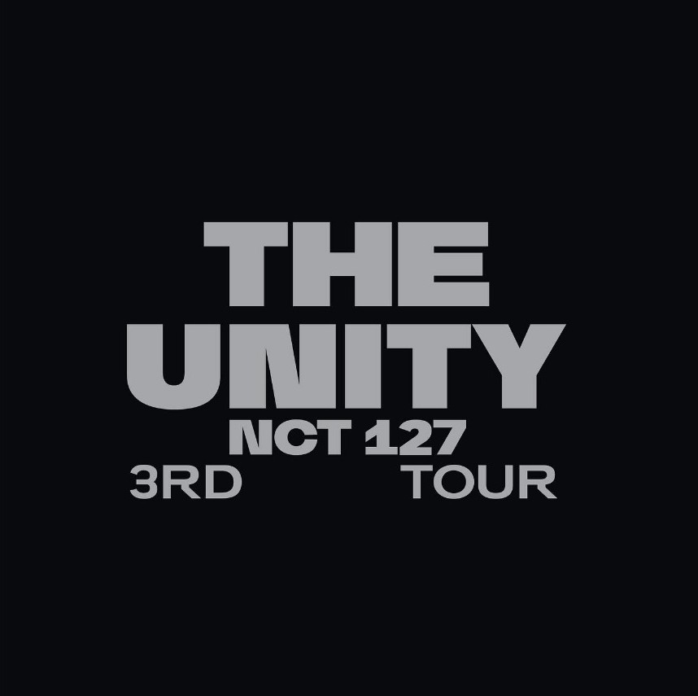
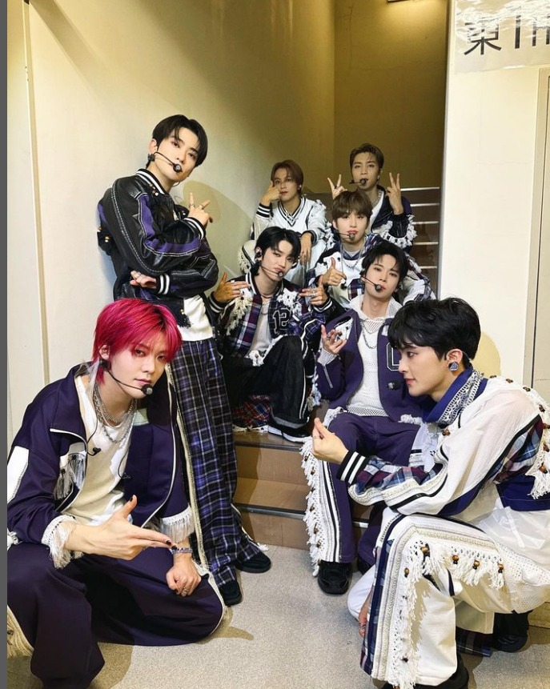

yeowon news
nct127 3번째 콘서트 11월 2주간 개최
NCT127이 11월 총 6일에 걸쳐
서울 올림픽 공원spo돔에서
세 번째 투어 콘서트를 엽니다.

지난 10월 6일,
정규 5집 ‘Fact Check’(팩트 체크)로 컴백하며
왕성하게 활동하고 있는 NCT 127이
단독 콘서트를 엽니다.
오는 11월 17~19일, 24~26일
무려 6일간 총 6회에 걸쳐
서울 올림픽공원 KSPO DOME에서
화려한 막을 올리는데요
이례적인 규모와 횟수라 관심이 쏠립니다.

이번 공연 타이틀은
‘네오 시티 : 서울 – 더 유니티(NEO CITY : SEOUL – THE UNITY)'입니다
NCT 127은 무엇이든
허투루 하는 법이 없죠
‘더 유니티‘(THE UNITY)는
첫 번째 투어 ‘디 오리진(THE ORIGIN)’,
음악으로 연결된 두 번째 투어 ‘더 링크(THE LINK)’를 거쳐
마침내 세계 팬들과 하나가 된 NCT 127이
새로운 챕터를 맞이하는 무대라는 의미가 담겼습니다.